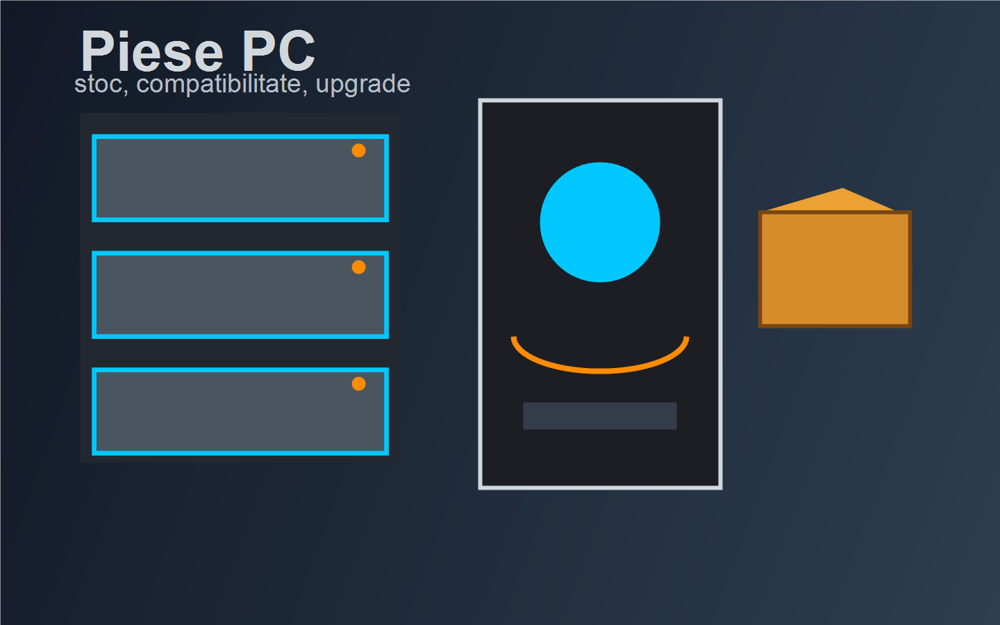
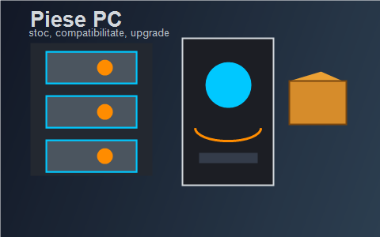

selectie rapida
Magazin de piese de calculator pentru upgrade rapid
Componente PC alese pentru gaming, lucru si sisteme echilibrate, intr-o prima impresie de tip poster.
Nexus Components este un magazin piese calculator dedicat clientilor care cauta componente PC bine organizate: placi video, procesoare, SSD si solutii de upgrade PC. Nu oferim reparatii, ci selectie clara pentru cine vrea sa cumpere piese compatibile, cu stoc afisat si explicatii scurte.
In oferta noastra apar frecvent procesoare AMD si Intel, placi video pentru gaming 1080p sau 1440p, SSD NVMe pentru incarcare rapida si kituri pentru upgrade PC. Pentru pasionati folosim termeni precum airflow si benchmark, fiindca fiecare componenta conteaza cand urmaresti echilibru intre pret, temperatura si performanta.
Un sistem bine ales nu inseamna doar un produs simplu, ci un ansamblu coerent; de aceea punem accent
pe compatibilitate, nu doar pe reduceri. In recomandarile noastre, sursa de 500W propusa initial
este insuficienta inlocuita cu o sursa de 750W 80+ Gold pentru o configuratie moderna.

Important: in weekendul de lansare, comenzile pentru placi video si procesoare din stoc limitat sunt confirmate in ordinea plasarii.
Un SSD rapid reduce timpii de incarcare, iar termenul
socket desemneaza standardul fizic si electric prin care procesorul se monteaza pe placa de baza.
Multi clienti vin dupa ce au citit The PC Builder's Guide sau citesc sfaturi scurte precum
alege intai platforma si abia apoi placa video
.

{kind=link}
Top categorii urmarite saptamana aceasta
Tabelul are minimum 4 randuri si 4 coloane, un rowspan diferit de 1 si stilizare cu alternanta pe coloane, hover pe rand si scroll orizontal controlat pe ecranele mai inguste.
| Categorie | Produs reprezentativ | Buget orientativ | Disponibilitate |
|---|---|---|---|
| Procesoare | AMD Ryzen 7 9700X | 1.650 lei | In stoc |
| Placi video | NVIDIA GeForce RTX 5070 | 3.450 lei | Stoc limitat |
| SSD | NVMe 1TB PCIe 4.0 | 420 lei | In stoc |
| Pachete upgrade | Kit DDR5 32GB + B650 | 1.150 lei | In stoc |
| Kit sursa 750W + carcasa airflow | 780 lei | La comanda | |
| Preturile sunt orientative pentru pagina demonstrativa si pot fi actualizate dupa lansarea catalogului complet. | |||
Calendar de evenimente
Placeholder pentru calendarul vizual cerut in layout. Momentan afisam reperele urmatoarelor activitati din showroom.
- Start campanie SSD NVMe
- Seara placilor video
- Bundle procesor + placa de baza
Anunturi rapide
Zona 4 este folosita ca placeholder pentru anunturi. Am pastrat informatia scurta, cu accent pe urgenta si pe stoc.
Transport gratuit pentru comenzi peste 500 lei in weekendul lansarii.
Actualizam stocul pentru placi video la fiecare 2 ore.
Utilizatori online
Placeholder pentru lista utilizatorilor online, conform cerintei individuale de layout.
- BuilderAlex cauta surse modulare
- FrameRateIoana compara RTX si Radeon
- SocketMihai filtreaza placi de baza B650
Indicatori rapizi si statistici
Interesul pentru placi video in aceasta saptamana:
Gradul de ocupare al stocului pentru SSD-uri populare:
Timpul mediu de selectie pentru un kit de upgrade:
Continut suplimentar pentru pagina principala
Categorii de componente PC
Pagina principala grupeaza cele mai cautate componente PC astfel incat un client sa ajunga repede la procesorul, placa video sau SSD-ul potrivit.
- Procesoare
- Modele AMD Ryzen si Intel Core pentru office, gaming si creator.
- Placi video
- Solutii entry-level, mid-range si high-end pentru jocuri si randare.
- Stocare
- SSD NVMe, SSD SATA si HDD pentru capacitate mare.
Selectam produse usor de comparat, cu accent pe stoc real, compatibilitate si recomandari scurte pentru upgrade PC.
Videoclipuri utile despre componente
Intrebari frecvente
Cum aleg intre mai multe placi video?
Alege rezolutia la care joci, bugetul si sursa disponibila; apoi compara memoria video si consumul.
De ce conteaza compatibilitatea dintre procesor si placa de baza?
Socket-ul si chipset-ul stabilesc daca procesorul poate functiona corect pe placa de baza aleasa.
Ce upgrade PC se simte primul intr-un sistem vechi?
De cele mai multe ori, un SSD si mai multa memorie RAM aduc primul salt vizibil in utilizarea zilnica.
Bonusuri implementate
Formula pentru alegerea sursei
Pentru un upgrade PC echilibrat, estimam puterea recomandata a sursei ca suma dintre consumul total al componentelor si o rezerva de siguranta de 25%.
Exemplu simplu: daca procesorul, placa video si restul componentelor consuma impreuna 520W, recomandarea ajunge la aproximativ 650W, deci o sursa de 750W ramane o alegere sigura.
Ghid PDF integrat
Mai jos este afisat un PDF demonstrativ cu recomandari pentru upgrade PC, folosind tagul object.
Playlist video automat
Aici avem 2 videoclipuri utile pentru a intelege alegerea echilibrata a componentelor PC